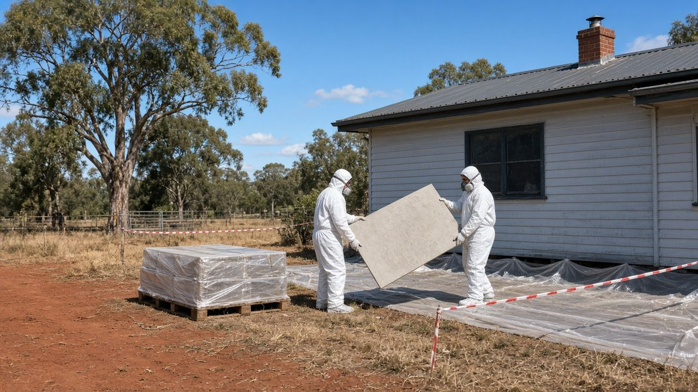
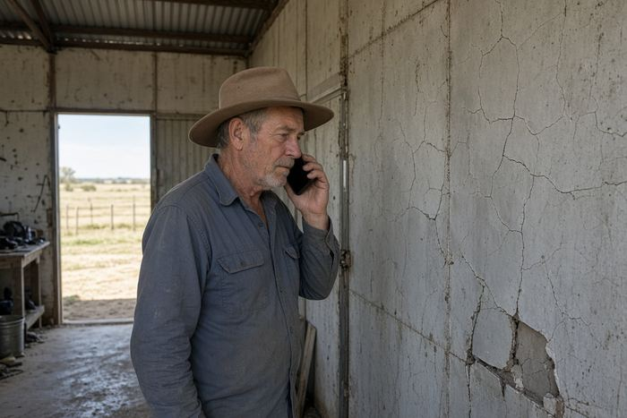
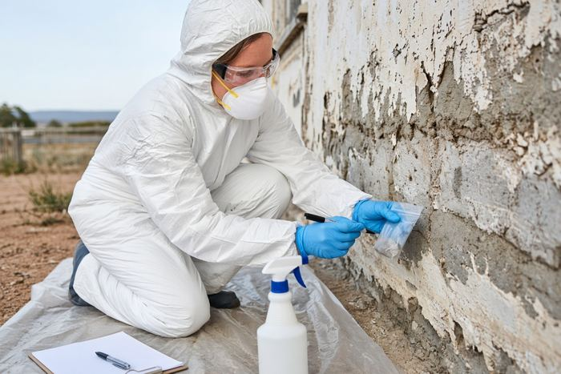
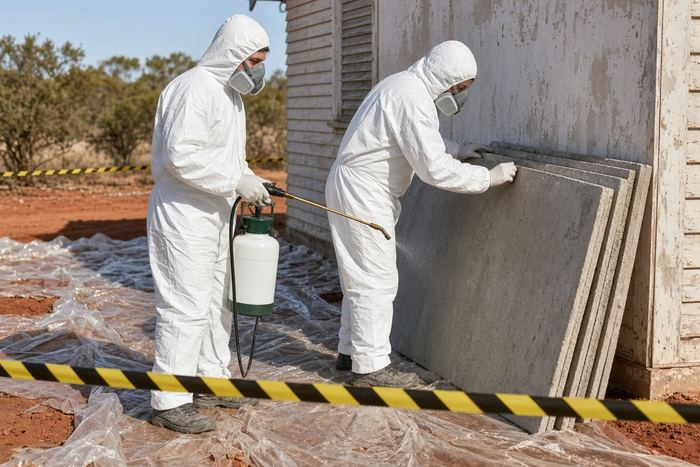
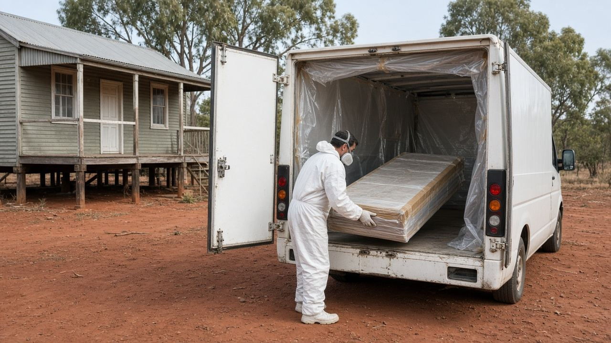
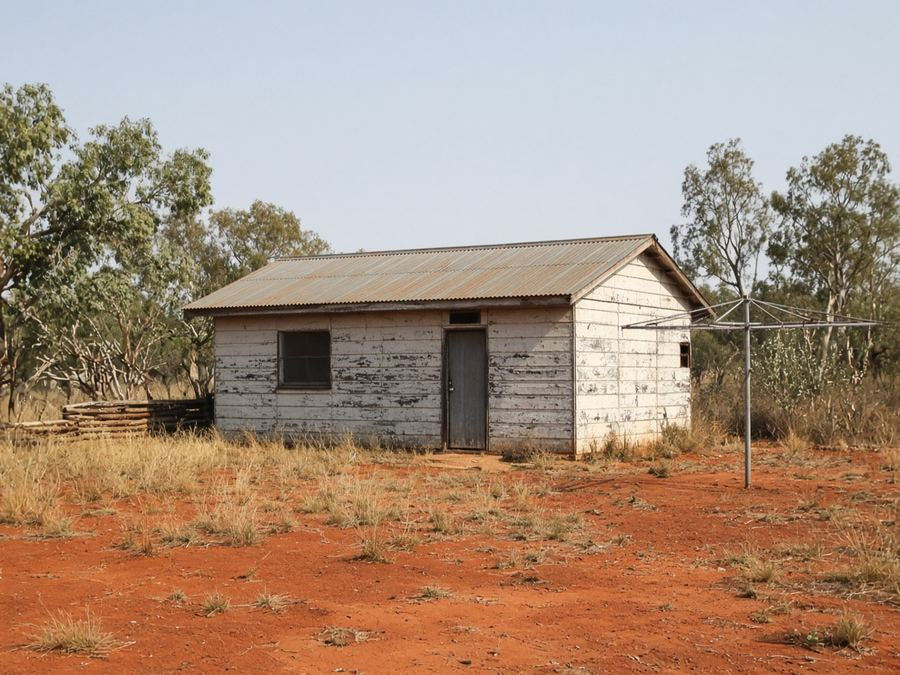
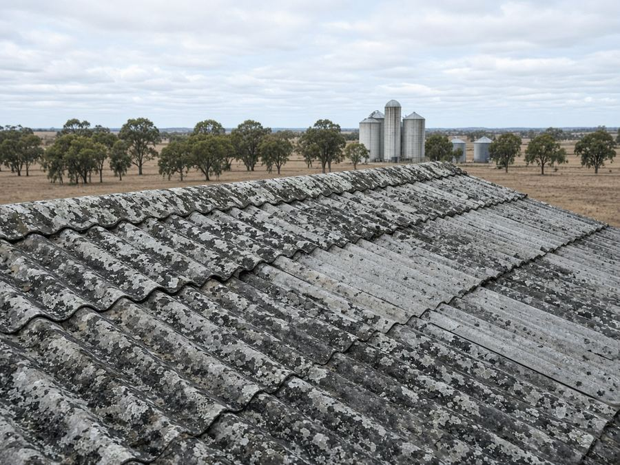
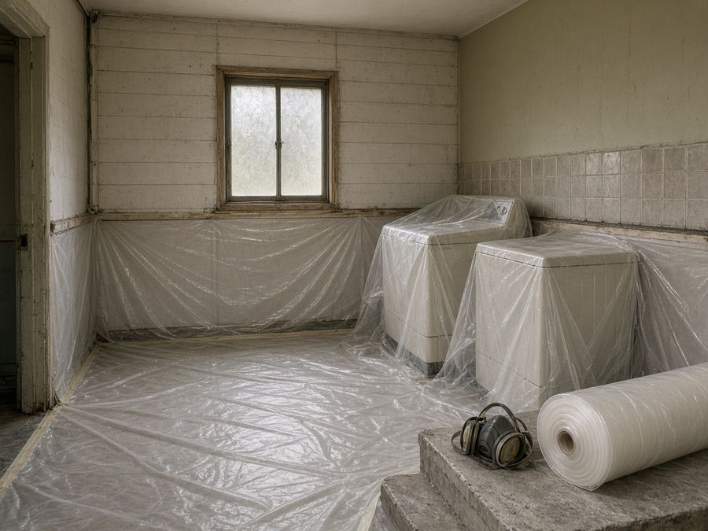
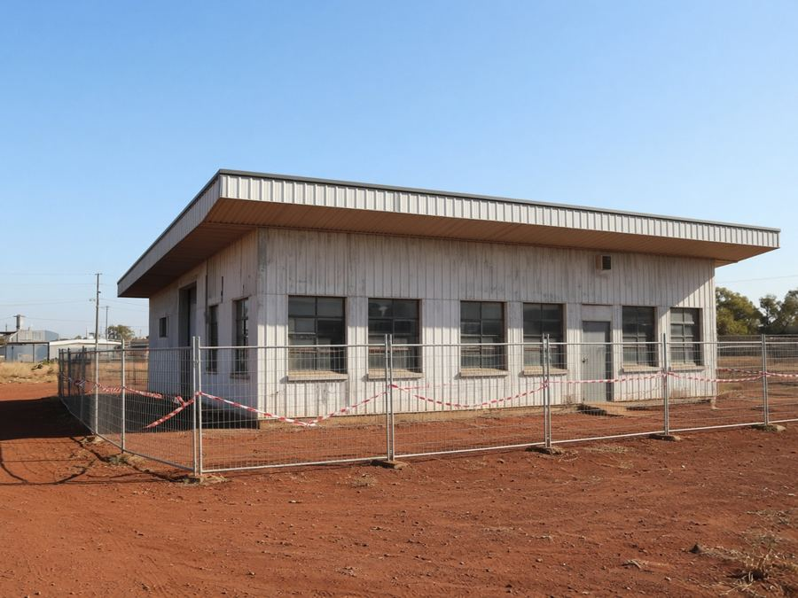
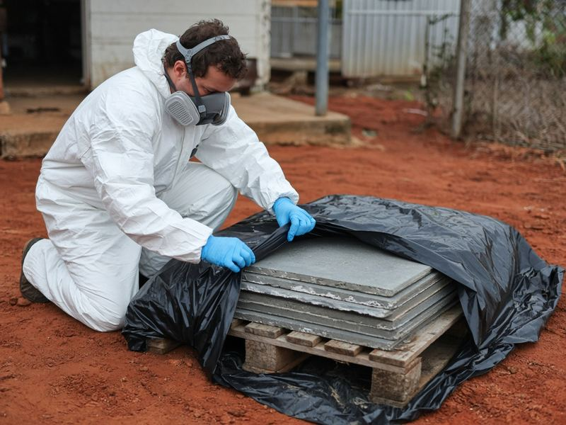

Asbestos Removal Dubbo: Free Quotes From a Licensed Local Removalist
Fibro cottage in South Dubbo, asbestos roofing on a farm shed at Ballimore or a laundry reno in Wellington? Tell us what you've found and we'll pass it to one licensed asbestos removalist who services the Dubbo region for a free, no-obligation quote.
Updated 23 October 2026
Get a free asbestos quote in Dubbo
- Free quote from a licensed removalist
- One local business, not a call-centre auction
- Dubbo, Wellington, Geurie and rural properties
- No obligation to book
How it works

1Tell us what you've found
Choose your town, what you need and the property type in the quote form. Photos and rough measurements help.

2A licensed local business reviews it
We send your request to one licensed asbestos removalist or assessor who covers the Dubbo region.

3You get a quote and a safe plan
They confirm the licence class needed, how it will be removed and disposed of, and the price. You decide.
Dubbo Asbestos Removal is a referral and quote service run by Raf Web Studio. We are not an asbestos removalist and we don't hold an asbestos licence. Every job is quoted and carried out by an independent, licensed local business. Always check their licence before work starts.
Asbestos services in Dubbo
From fibro cottages in town to asbestos-cement roofs on sheds out west, these are the services people across the Dubbo region ask about most. The licensed business that quotes you confirms what it can do.
Bonded asbestos removal (Class B)
Fibro walls, eaves, garages and asbestos-cement roofing over 10 m², removed by a Class B or Class A licensed removalist.
Friable asbestos removal (Class A)
Pipe lagging, loose insulation and badly weathered or fire-damaged material. Only a Class A licence holder can do this work.
Testing and inspection
Sampling of suspect material for an accredited lab, and inspections before you buy, renovate, rent out or demolish.
Farm and shed roofs
Corrugated asbestos-cement roofing on hay sheds, machinery sheds and old homesteads.
Commercial and rental properties
Asbestos registers, inspections and removal for workplaces, landlords and property managers.
Clearance after removal
A clearance inspection after licensed removal, with air monitoring for friable work.
Some businesses remove asbestos and others only test or inspect. Tell us what you need and we'll match you with the right licensed business.
Where asbestos turns up in Dubbo buildings
Dubbo and Wellington have many post-war fibro cottages, and fibro or asbestos-cement products were common on farms across the region until the late 1980s. Heat and age can weather old sheeting, so treat it with care.
Bonded (non-friable) vs friable
Bonded asbestos is mixed into a material such as cement and is reasonably stable while it's in good condition: fibro sheets, asbestos-cement roofing, pipes and some vinyl floor tiles. More than 10 m² must be removed by a Class A or Class B licensed removalist.
Friable asbestos can be crumbled by hand, such as old pipe lagging, sprayed insulation, some backing on vinyl and badly weathered or fire-damaged sheeting. Any amount must be removed by a Class A licensed removalist.
Common places to find it
- Houses: fibro cottages, sleepouts, eaves and gable ends
- Wet areas: laundry and bathroom wall linings behind tiles
- Farm buildings: asbestos-cement roofing and cladding on sheds, shearing sheds and old homesteads
- Floors: old vinyl tiles and sheet-vinyl backing
- Outside: fibro fences, carports and garages
- Services: old flue pipes, water and drainage pipes, and pipe lagging
Think you've found asbestos? What to do
- Stop work and leave it alone. Don't break, drill, cut, sand or water-blast it.
- Keep people and pets away from damaged material, and close off the area if you can.
- If it's already damaged (storm, fire or a renovation gone wrong), lightly mist loose debris with water to keep dust down, but don't hose it or use a pressure washer. Don't use a household vacuum.
- Get it tested. A licensed assessor or competent person can take a sample for an accredited lab.
- Use a licensed removalist for anything over 10 m² of bonded asbestos or any friable asbestos. Request a free quote.
Asbestos removal cost in Dubbo
We looked for asbestos removal prices published by businesses in the Dubbo area on 23 Oct 2026 and didn't find reliable local prices, so we don't show any. Tell us about your job and we'll help you get a competitive price from a licensed local removalist. Get a free quote.
Prices vary by size and job. Every asbestos job is different, so a licensed removalist needs to see it, or at least photos, before giving a price. Get a free quote for your job.
What changes the price
Type and amount
Bonded fibro is usually simpler than friable material. The area, number of sheets and condition all count.
Access and distance
Roofs, high walls and rural properties out towards Toongi or Eumungerie can add time, travel and equipment.
Testing, disposal and clearance
Lab tests, council tip fees for wrapped asbestos, and clearance inspections may be priced separately. Ask what's included.
Ask every removalist for their licence number and a written quote that lists disposal and clearance.
Asbestos rules in NSW and Dubbo Regional Council
Last checked: 23 Oct 2026
Who can remove asbestos
In NSW, a homeowner may remove up to 10 m² of bonded (non-friable) asbestos themselves, following SafeWork NSW guidance. More than 10 m² of bonded asbestos needs a removalist with a Class B or Class A licence, and any friable asbestos needs a Class A licence. Licensed removalists must notify SafeWork NSW at least 5 working days before licensed work starts. You can check a removalist's licence through asbestos.nsw.gov.au or Service NSW.
Transport and tracking
The NSW EPA says a householder who transports more than 100 kg or 10 m² of asbestos waste must report it to the EPA within 24 hours of delivering it. Licensed contractors track loads through the EPA's Integrated Waste Tracking Solution. Asbestos must be wrapped, labelled and taken only to a facility licensed to accept it. See the NSW EPA for current rules.
Local disposal
Dubbo Regional Council's Whylandra Waste and Recycling Centre is on Cooba Road, off the Narromine Road, about 15 km west of Dubbo. It's cashless, and asbestos customers aren't admitted after 4:15pm. The guidance we found says asbestos must be wetted, wrapped in heavy-duty plastic, taped and labelled, and that you must contact the centre before you bring it. Check current requirements and fees with Dubbo Regional Council on 02 6801 4000 before you go. Council also has an asbestos awareness page.
Asbestos can never go in a general skip bin, household wheelie bin or kerbside clean-up.

Licensed asbestos removal quotes across the Dubbo region
Get a free quoteAreas we cover around Dubbo
We take quote requests from Dubbo, Wellington and the surrounding towns and rural areas. The removalist confirms they service your address.
Dubbo
- Dubbo
- West Dubbo
- South Dubbo
- East Dubbo
- Delroy Park
- Keswick Estate
- Southlakes Estate
Villages and rural
- Brocklehurst
- Wongarbon
- Eumungerie
- Mogriguy
- Ballimore
- Rawsonville
- Toongi
Wellington and south-east
- Wellington
- Geurie
- Stuart Town
Not listed? Choose "Other" in the form and tell us your town.
Common asbestos jobs in Dubbo
These are the asbestos jobs people across the Dubbo region most often need quotes for.

Fibro housesRemoving fibro walls, eaves or a sleepout before a renovation or sale.
Farm sheds and roofsCorrugated AC roofing and cladding on hay, machinery and shearing sheds.
Laundry and bathroom renosOld wall linings behind tiles. Test first, and keep the area sealed during removal.
Commercial and rental propertiesInspections, registers and removal for workplaces, landlords and property managers.Before demolition
Asbestos must be identified and removed before demolition. Your certifier or council may ask for evidence.
Storm and fire damage
Broken or burnt fibro after a storm or fire needs urgent, careful handling. Keep clear and get a licensed business in.
Asbestos removal FAQ for Dubbo
How much does asbestos removal cost in Dubbo?
It depends on the type and amount of asbestos, its condition, access, travel and disposal. We didn't find reliable published local prices, so the best way to get an accurate figure is a free quote.
Can I remove fibro myself?
In NSW, a homeowner may remove up to 10 m² of bonded asbestos following SafeWork NSW guidance. Anything over 10 m², or any friable asbestos, must be removed by a licensed removalist.
What licence does a removalist need?
A Class B licence for bonded (non-friable) asbestos over 10 m². A Class A licence for friable asbestos, which also covers bonded.
How can I tell if my shed roof is asbestos?
You can't tell for sure by looking. Corrugated cement roofing from before 1990 often contains asbestos. Get a sample tested by an accredited lab.
Where can I dispose of asbestos in Dubbo?
At Dubbo Regional Council's Whylandra Waste and Recycling Centre on Cooba Road, off the Narromine Road. Contact the centre before you bring asbestos, and arrive before 4:15pm.
How should asbestos be packaged for the tip?
The guidance we found says to wet it, wrap it in heavy-duty plastic, tape it and label it. Check the current requirements with council before you go.
Is Dubbo Asbestos Removal licensed?
No. We are a referral and quote service run by Raf Web Studio. One licensed local business quotes you and does the work. Always check their licence.
How do I check a removalist's licence?
Use the licence search on asbestos.nsw.gov.au or Service NSW.
Do I need to tell anyone before removal starts?
Licensed removalists must notify SafeWork NSW at least 5 working days before licensed removal work starts. They handle this.
Do I have to report transporting asbestos?
The NSW EPA says a householder who transports more than 100 kg or 10 m² of asbestos waste must report it within 24 hours of delivery.
Can asbestos go in a skip bin?
Not a general skip. Some operators offer special lined bins or bags, but the asbestos still has to be wrapped and handled correctly.
Do you cover Wellington and rural properties?
Yes, we take requests from Wellington, Geurie, Stuart Town and rural properties around Dubbo. The removalist confirms they service your address.
What should I do if fibro is damaged in a storm?
Keep people and pets away, don't hose or sweep it, lightly mist loose debris if needed, and call a licensed removalist.

Worried about asbestos?
Leave it alone and tell us what you've found. We'll pass it to one licensed asbestos removalist in the Dubbo region for a free, no-obligation quote.